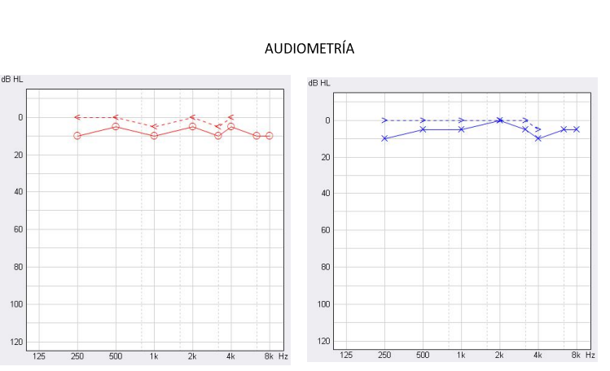
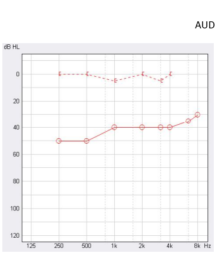
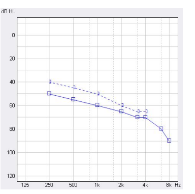
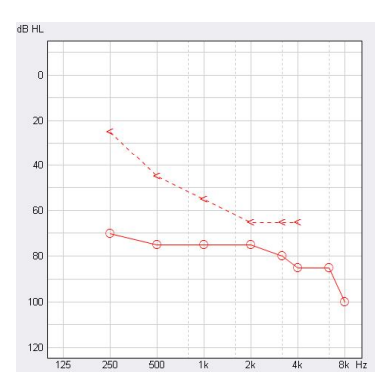

Acumetría
Audiometría
☀️
Evaluación Audiológica Básica · Clemencia Restrepo Arias
Tarjetas de Audiometría
Presentado por Santiago Otero
Bloque 1
6 tarjetas
← Anterior
Siguiente →
Referencias visuales · Tipos de audiograma

Audiometría Normal
VA y VO en 0–25 dB · sin gap

Audiometría Conductiva
Gap aéreo-óseo · VO normal

Audiometría Neurosensorial
Sin gap · VA y VO elevadas juntas

Audiometría Mixta
Gap + VO elevada · ambos componentes
Módulo anterior
← Tarjetas de Acumetría
Weber · Rinne · Schwabach · Evaluación con voz
⟵
×